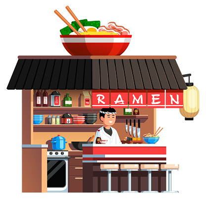

Nastanak
Popularnost
Priprema

Restorani u Srbiji
Japanski restoran Marukoshi - Beograd
ANGRY MONK
Sakura
Restorani u Hrvatskoj
Japanski restoran Tekka
Takenoko
Restorani u Bosni i Hercegovini
Kineski Restoran Sečuan
Sushi San
Kimono